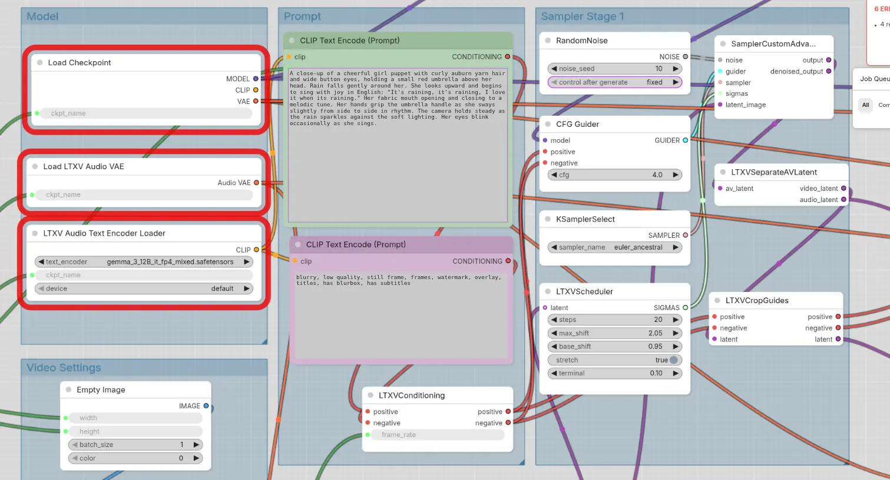
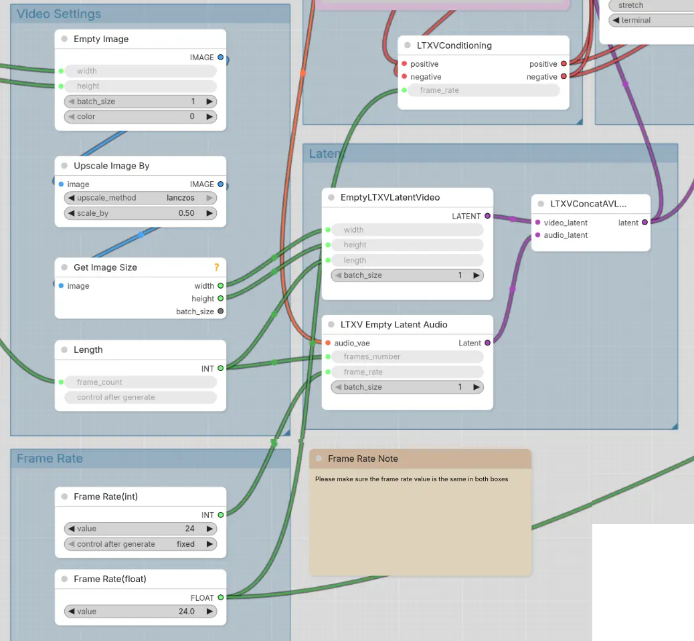
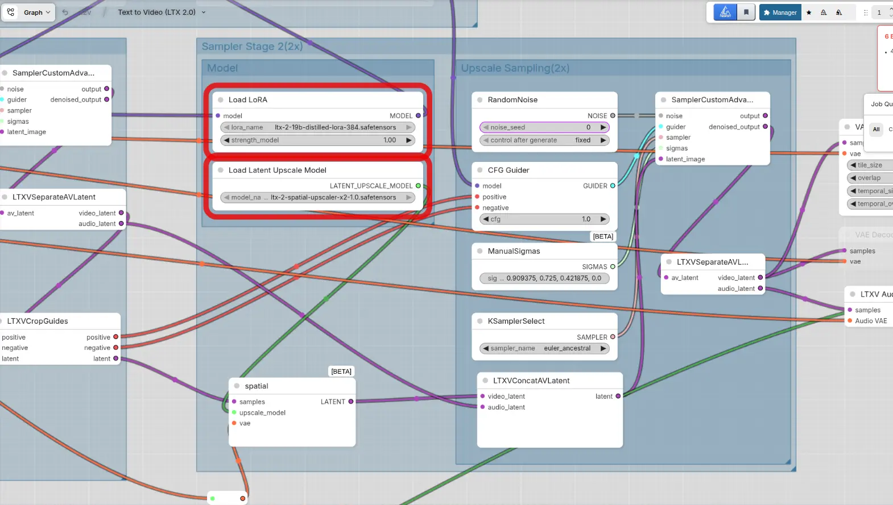
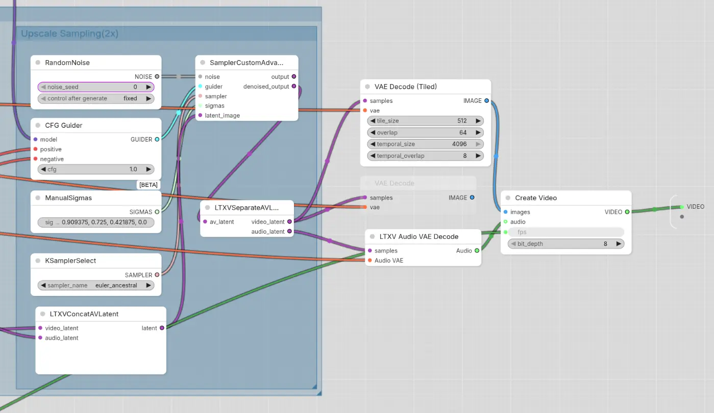

unet: ltx-2.3-22b-distilled-1.1-Q4_K_M.gguf (14.2GB)
fp8:
dualclip
vae
sage attention 2.2
LTXV NAG: Negative prompts for LTX-2, even at CFG 1
others:
LTXV2 model preview
LTXVConditioning ?
LTXVConcatAVLatent (inputs: a, v, output: sampler)
sampler output
Create Video
cd ComfyUI
source venv/bin/activate
# https://huggingface.co/unsloth/LTX-2.3-GGUF/resolve/main/distilled-1.1/ltx-2.3-22b-distilled-1.1-Q4_K_M.gguf?download=true
# 14.2GB
hf download unsloth/LTX-2.3-GGUF --include distilled-1.1/ltx-2.3-22b-distilled-1.1-Q4_K_M.gguf --local-dir .
# https://huggingface.co/google/gemma-3-12b-it-qat-q4_0-gguf/resolve/main/gemma-3-12b-it-q4_0.gguf?download=true
# 8.07GB
# https://huggingface.co/unsloth/gemma-3-12b-it-GGUF/resolve/main/gemma-3-12b-it-Q3_K_M.gguf?download=true
# 6.01GB
# https://huggingface.co/unsloth/gemma-3-12b-it-GGUF/resolve/main/gemma-3-12b-it-Q4_K_M.gguf?download=true
# 7.3GB
hf download unsloth/gemma-3-12b-it-GGUF --include gemma-3-12b-it-Q4_K_M.gguf --local-dir .
# https://huggingface.co/mradermacher/gemma-3-12b-it-heretic-GGUF/resolve/main/gemma-3-12b-it-heretic.Q3_K_M.gguf?download=true
# 6.01GB
hf download mradermacher/gemma-3-12b-it-heretic-GGUF --include gemma-3-12b-it-heretic.Q3_K_M.gguf --local-dir .
# https://huggingface.co/stronman/ltx-2.3_text_projection_bf16.safetensors/resolve/main/ltx-2.3_text_projection_bf16.safetensors?download=true
# 2.31GB
hf download stronman/ltx-2.3_text_projection_bf16.safetensors --include ltx-2.3_text_projection_bf16.safetensors --local-dir .
# https://huggingface.co/unsloth/LTX-2.3-GGUF/resolve/main/vae/ltx-2.3-22b-distilled_audio_vae.safetensors?download=true
# 365MB
hf download unsloth/LTX-2.3-GGUF --include vae/ltx-2.3-22b-distilled_audio_vae.safetensors --local-dir .
# https://huggingface.co/unsloth/LTX-2.3-GGUF/resolve/main/vae/ltx-2.3-22b-distilled_video_vae.safetensors?download=true
# 1.45GB
hf download unsloth/LTX-2.3-GGUF --include vae/ltx-2.3-22b-distilled_video_vae.safetensors --local-dir .
# kijai's repo
# ltx-2.3-22b-distilled-1.1_transformer_only_fp8_scaled.safetensors
# https://huggingface.co/Kijai/LTX2.3_comfy/resolve/main/diffusion_models/ltx-2.3-22b-distilled-1.1_transformer_only_fp8_scaled.safetensors?download=true
hf download Kijai/LTX2.3_comfy --include diffusion_models/ltx-2.3-22b-distilled-1.1_transformer_only_fp8_scaled.safetensors --local-dir .
# https://huggingface.co/Kijai/LTX2.3_comfy/resolve/main/vae/LTX23_audio_vae_bf16.safetensors?download=true
hf download Kijai/LTX2.3_comfy --include vae/*.safetensors --local-dir .
# https://huggingface.co/Comfy-Org/ltx-2/resolve/main/split_files/text_encoders/gemma_3_12B_it_fp8_scaled.safetensors?download=true
# 13.2GB
hf download Comfy-Org/ltx-2 --include split_files/text_encoders/gemma_3_12B_it_fp8_scaled.safetensors --local-dir .
# https://huggingface.co/Comfy-Org/ltx-2/resolve/main/split_files/text_encoders/gemma_3_12B_it_fp4_mixed.safetensors?download=true
# 9.45GB
hf download Comfy-Org/ltx-2 --include split_files/text_encoders/gemma_3_12B_it_fp4_mixed.safetensors --local-dir .
# https://huggingface.co/Lightricks/LTX-2.3/resolve/main/ltx-2.3-spatial-upscaler-x2-1.1.safetensors?download=true
# 996MB
hf download Lightricks/LTX-2.3 --include ltx-2.3-spatial-upscaler-x2-1.1.safetensors --local-dir .
📂 ComfyUI/
├── 📂 models/
│ ├── 📂 checkpoints/
│ │ ├── ltx-2-19b-dev.safetensors
│ │ └── ltx-2-19b-dev-fp8.safetensors
│ ├── 📂 text_encoders/
│ │ └── gemma_3_12B_it_fp4_mixed.safetensors
│ ├── 📂 loras/
│ │ ├── ltx-2-19b-distilled-lora-384.safetensors
│ │ └── ltx-2-19b-lora-camera-control-dolly-left.safetensors
│ └── 📂 latent_upscale_models/
│ └── ltx-2-spatial-upscaler-x2-1.0.safetensors



